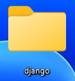
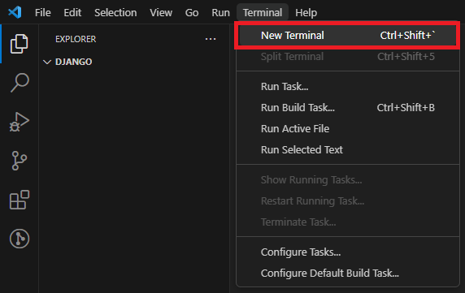
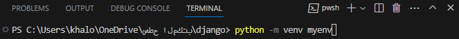
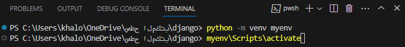
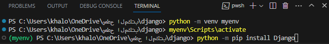
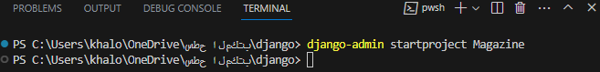
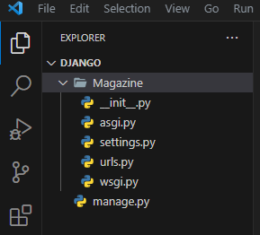
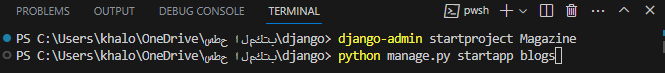
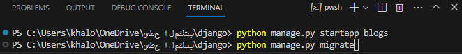

Install Django
Create a folder and name it whatever you want.

Open it in visual studio code.
Go to Terminal > New Terminal.

Create your virtual environment that will contain the project packages.
Use the following command.
python -m venv environment name

Activate your environment.
use: environment name\Scripts\activate

Install the Django framework
Use the following command.
python -m pip install Django

Write in terminal django-admin startproject project name as Ecommerce, tic_tac_toe etc.

Make the files structure like this.

Run the project to make sure that everythings are working fine.
python manage.py runserver
What's the difference between the project and app?
Apps are the part of project, so project consist of multiple apps.
For Example: Ecommerce Project will contain cart app, product app, category app etc.
each app will contains its own files as view, model, admin etc.
We will dive into each file in separated section.
To create an app use the following command.
python manage.py startapp appname
for example blogs
the app should have indecative name

In blogs app we will create urls file.
Put the following codes in urls file.

from django.urls import path
from . import views
urlpatterns = [
    path("", views.index, name="index"),
]

When you create a new app put the previous codes.
views.index and name="index" can be changed according to your view.
We will explain that in details in url section.
In your project root, include each app urls file. for example include blogs urls
Go to your project root > urls.py then put the following code.

from django.contrib import admin
from django.urls import include, path
urlpatterns = [
    path('admin/', admin.site.urls),
    path("blogs/", include("blogs.urls")),
]

Go to project root > settings.py add your app name in INSTALLED_APPS list
INSTALLED_APPS = [
    ...
    'blogs'
]
In django the default database is Sqlite. Check the database section to know how to change the database type.
Use following command to build the database.
python manage.py migrate


تنزيل دجانجو
أنشأ ملف و اعطيه اسم
افتح برنامج
اذهب الى
انشأ بيئة لمشروعك لتحتوي على المكتبات التي سوف تقوم بتنزيلها
استخدم الامر الآتي
فعل بيئة المشروع
حمل ايطار الدجانجو
استخدم الامر الآتي
استخدم الامر الآتي
اجعل بنية الملفات بالشكل الآتي
شغل المشروع للتاكد من ان كل شيء يعمل بنجاح
ماهو الفرق بين 
هو جزء من و يحتوي على العديد من 
مثال: موقع بيع و شراء يحتوي على منتج فئة سلة
سوف نشرح كل ملف في فسم مختلف
لتنشأ استخدم هذا الامر
اسم
مثل مقال
يجب ان يكون اسم دلالي و ليس اسم عشوائي
في ملف سوف ننشأ
ضع الكود التالي في ملف
كرر هذه الخطوة دائما عندما تنشئ جديد
يمكن تغيرهم حسب
سوف نشرح ذلك بالتفصيل في ملف
في ضمن 
مثال: ضمن
اذهب الى ثم ثم ضع الكود الآتي
اذهب الى ثم ضف اسم في قائمة